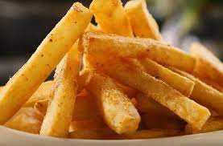

Papas fritas

Ingredientes
3 o 4 papas (300 gramos)
Aceite
Sal
Elaboracion (Pasos)
Pelar las papas
Cortarlas en baston
Calentar aceite en una sarten
Cocinar hasta que esten doradas
Romeverlas del aceite y salar a gusto